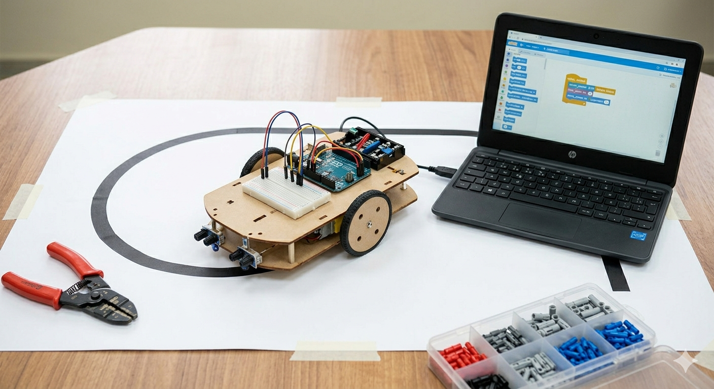

🚦 Semáforo Inteligente com Sensor IR - experimento anterior
Questão investigada: Como a automação pode otimizar o fluxo de trânsito e evitar esperas desnecessárias?
Procedimento: Foi montado um sistema com LEDs e sensor infravermelho capaz de detectar os pedestres e controlar o semáforo automaticamente.
Dados: O projeto possui dois semaforos, um para os carros (verde, amarelo e vermelho), outro para os pedestres (verde e vermelho), Verde: atravesse, Amarelo: atenção e Vermelho: espere. Sendo de acordo quando o sensor detecta um pedestre.
| Situação | Tempo | Resultado |
|---|---|---|
| Objeto claro | 0,5s | Funcionou |
| Objeto escuro | 0,7s | Falha parcial |
| Luz forte | Variável | Falha |
Análise: O sistema está relacionado com conceitos de velocidade e distância de frenagem, importantes para garantir segurança no trânsito.
Avaliação crítica: O experimento faz sentido pois adapta o semáforo à presença real de veículos, mas é limitado pelo alcance do sensor.
Limitações: Interferência da luz e incapacidade de diferenciar tipos de veículos (ex:preferncia para uma ambulancia.).
Mobilidade urbana: Os semáforos inteligentes com sensor infravermelho (IR) são sistemas que detectam veículos ou pedestres em tempo real e ajustam automaticamente o tempo dos sinais. Diferente dos modelos tradicionais, eles evitam esperas desnecessárias.
O funcionamento ocorre quando o sensor emite um feixe infravermelho que é interrompido ao detectar um objeto, enviando um sinal para o sistema liberar o semáforo.
Vantagens:
- Redução de congestionamentos
- Maior segurança
- Melhor eficiência no trânsito
Esse experimento foi importante para entender como sensores podem ser usados para automatizar o trânsito e melhorar a mobilidade urbana.

🧠 Projeto criado com Inteligência Artificial

Como utilizar a IA para criar um projeto de robótica:
Ela atua como assistente técnico, escrevendo códigos para o Arduino, desenhando diagramas de circuitos, sugerindo componentes compatíveis e corrigindo erros de lógica instantaneamente.
Pontos positivos:
- Maior precisão
- Automação de processos
- Análise rápida de dados
Pontos negativos:
- Dependência de tecnologia
- Custo elevado
- Possíveis erros de programação